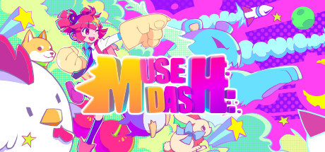

Muse Dash adalah game bergenre rhythm action yang dikembangkan oleh PeroPeroGames dan dipublikasikan oleh X.D. Network. Game ini pertama kali dirilis pada 2018 dan tersedia di berbagai platform seperti PC, Nintendo Switch, dan mobile devices.
Harga Muse Dash di Steam adalah Rp37.000. Namun, untuk membuka semua lagu yang tersedia di dalam game, kamu perlu membeli DLC Muse Plus yang seharga Rp430.000. DLC ini memberikan akses ke seluruh lagu di Muse Dash, termasuk lagu-lagu di update mendatang(tidak termasuk dlc collab arknight dan vocaloid).
Di dalam game ini, pemain akan mengendalikan karakter dan melawan musuh-musuh dalam alunan musik yang menantang. Muse Dash terkenal dengan art style yang colorfull dan gameplay yang intuitif namun menantang.
